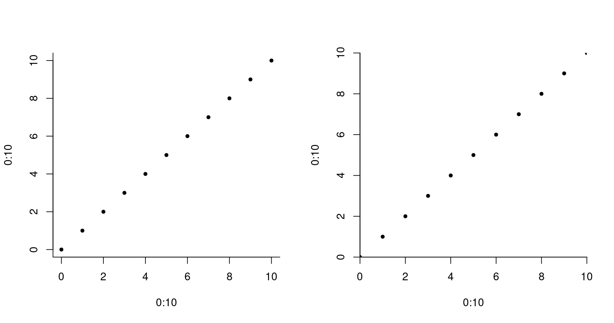
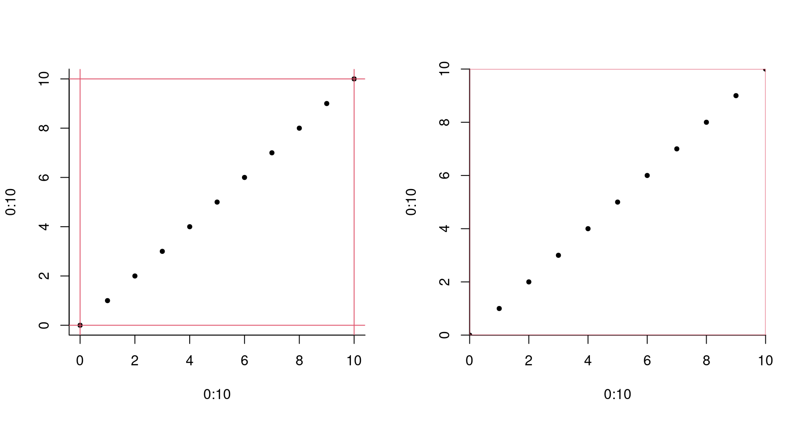

Trick or tips 001 {R}
June 30, 2017

Trick or Tips?
Ever tumbled on a code chunk that made you say: "I should have known this ¶ø?!@~&* piece of code long ago!?" Chances are you have, frustratingly, just like we have, and on multiple occasions too.In comes Trick or Tips!
Trick or Tips is a series of blog posts that each present 5 -- hopefully helpful -- coding tips for a specific programming language. Posts should be short (i.e. no more than 5 lines of code, max 80 characters per line, except when appropriate) and provide tips of many kind: a function, a way of combining of functions, a single argument, a note about the philosophy of the language and practical consequences, tricks to improve the way you code, good practices, etc.
Note that while some tips might be obvious for careful documentation readers (God bless them for their wisdom), we do our best to present what we find very useful and underestimated. By the way, there are undoubtedly similar initiatives on the web (e.g. "One R Tip a Day" Twitter account). Also, feel free to comment below tip ideas or a post of code tips of your own which we will be happy to incorporate to Trick or Tips. Enjoy and get ready to frustratingly appreciate our tips!
Trick or tips 0001
For the first post of the series, let’s introduce 5 R tips:
- The %in% operator
- The
paste0()function - Using “\r” in
cat() - The
sprintf()function - The
xaxsandyaxsarguments ofpar()
The ‘%in%’ operator
I have known this for a while, but I keep remembering how it eases my pain when I
learned how to use it. Let’s consider two vector vecA and vecB, the
vecA%in%vecB returns a vector of logical of the length vecA stating whether
the elements of vecA are in vecB:
vecA <- c("a", "d", "2", "4", "e", ";")
vecB <- letters # vector of lower case letters the Roman alphabet
vecA%in%vecB
#R> [1] TRUE TRUE FALSE FALSE TRUE FALSEthe ith element of the output vector is TRUE if the ith element of vecA is
among the elements of vecB. Note that you can have a similar result calling the intersect() functions which returns elements that vecA and vecB are sharing.
intersect(vecA, vecB)
#R> [1] "a" "d" "e"By the way, you should have a look to the documentation of intersect().
The paste0() function
I often concatenate strings. The natural way to do this is to use the paste() function. Let’s say I need to create a set of original file names such as: “myfile1”, “myfile2”, “myfile3”, etc. I can call paste() like so:
paste("myfile", 1:7)
#R> [1] "myfile 1" "myfile 2" "myfile 3" "myfile 4" "myfile 5" "myfile 6" "myfile 7"BUT, there is a annoying space between “myfile” and the number, to remove the
space, sep argument is needed:
paste("myfile", 1:3, sep="")
#R> [1] "myfile1" "myfile2" "myfile3"UNLESS you use the paste0() that is the version of paste() with the desired
default parameters:
paste0("myfile", 1:3)
#R> [1] "myfile1" "myfile2" "myfile3"I know… this means you’ll save 5 previous characters each time you call paste0()!
Using argument ‘\r’ in cat()
Note that for this tip, you should execute the code-chunk in your own R console
When programming we often need to monitor what we are doing, especially for
time-consuming calculation. Using cat() with all its default is very helpful
to report information on progress:
for (i in 1:10) {
cat("iteration n°", i, "\n")
}Here "\n" is what breaks the line! Instead of breaking the line, we can erase
the line, i.e. using "\r":
for (i in 1:10) {
Sys.sleep(.25) # I added a pause so you can see what's happening
cat("iteration n°", i, "\r")
}I hope this gives you some ideas :). If you are thinking “where the !&)@( is he going with this!” let me give you two extra way to monitor a for loop:
- Use percentage:
nmx <- 222
for (i in 1:nmx) {
Sys.sleep(.01) # replace it by what you are doing
cat("==>", format(100*i/nmx, digits=4), "%", "\r")
}- Create you own progress bar:
nmx <- 222
sz <- 60
for (i in 1:nmx) {
Sys.sleep(.01) # replace it by what you are doing
nb <- floor(sz*i/nmx)
pgr <- paste(rep(c("="," "), c(nb, sz-nb)), collapse="")
cat("|", pgr, "| ", "\r")
}I hope you like this! Otherwise, stick to use getTxtProgressBar() and setProgressBar() functions, but I swear you are missing something.
The sprintf() function
The function is a wrapper for a well-known C function sprintf(). There are
so much to say about it and I won’t (so please have a careful look at the
documentation) but I think it is worth a tip to present the most used features
of this function.
The first argument of sprintf() is a string that includes tag to be replaced
by the extra arguments. A tag starts with a %, is followed by a
couple of optional characters tuning the display and ends with a letter
specifying the nature of the variable(s) to be displayed (number or string). The
most common letters are:
- “d” for integer value;
- “f” for double precision value;
- “s” for strings.
The most common options are:
- “n”, an integer values specifying the width of the field;
- “0” indicates whether zero-padding should be used;
- “.m” where n is an integer.
That being said, to be as clear as possible, let me exemplify!
- Different kind of variables:
sprintf("%d", 1)
sprintf("%f", pi)
sprintf("%s", "A")
#R> [1] "1"
#R> [1] "3.141593"
#R> [1] "A"- Combine different variables:
sprintf("An integer: %d, a double: %f, a string: %s", 1, pi, "A")
#R> [1] "An integer: 1, a double: 3.141593, a string: A"- Tune the field width:
sprintf("%10f", pi)
#R> [1] " 3.141593"- Zero-padding:
sprintf("%010f", pi)
#R> [1] "003.141593"- Tune the precision:
sprintf("%.50f", pi)
#R> [1] "3.14159265358979311599796346854418516159057617187500"Pretty cool, isn’t it? To conclude two questions. Question 1: do you remember the file naming example using to showcase paste0()? I assume your answer if yes. Let’s say you now have more than 100 files to name and you want to use zero-padding and a constant field width of 3 (e.g. “myfile001”, “myfile010”, “myfile100”). This leads
me to question 2: what do you do? => Go sprintf()!
paste0("myfile", sprintf("%03d", c(1,10,100)))
#R> [1] "myfile001" "myfile010" "myfile100"The xaxs and yaxs arguments of par()
This is also something I learnt years ago and keep using for almost all my
plots ever since. Default values of graphical parameters generate plot that
add and extra 4% to the axes limits. This is actually useful to ensure that
all graphical symbols are entirely displayed. However, I prefer using round
values as axes limits and handling myself their values so that all symbols stay visible. In order to get rid of the extra 4% added on the x-axis (y-axis), you
have to pass xaxs="i" (yaxs="i") to the par() function. I compare below
a plot using the default parameters’ values and the same plot using the tip:
par(mfrow=c(1,2), bty="l")
plot(0:10, 0:10, pch=20)
par(xaxs="i", yaxs="i")
plot(0:10, 0:10, pch=20)
Can you tell the difference? I now add two extra lines to stress the differences out.
par(mfrow=c(1,2), bty="l")
plot(0:10, 0:10, pch=20)
abline(v=c(0,10), h=c(0,10), col=2)
par(xaxs="i", yaxs="i")
plot(0:10, 0:10, pch=20)
abline(v=c(0,10), h=c(0,10), col=2)
That’s all folks… until next time!
Session info
sessionInfo()
#R> R version 4.0.4 (2021-02-15)
#R> Platform: x86_64-pc-linux-gnu (64-bit)
#R> Running under: Debian GNU/Linux bullseye/sid
#R>
#R> Matrix products: default
#R> BLAS: /usr/lib/x86_64-linux-gnu/openblas-pthread/libblas.so.3
#R> LAPACK: /usr/lib/x86_64-linux-gnu/openblas-pthread/libopenblasp-r0.3.13.so
#R>
#R> locale:
#R> [1] LC_CTYPE=en_CA.UTF-8 LC_NUMERIC=C
#R> [3] LC_TIME=en_CA.UTF-8 LC_COLLATE=en_CA.UTF-8
#R> [5] LC_MONETARY=en_CA.UTF-8 LC_MESSAGES=en_CA.UTF-8
#R> [7] LC_PAPER=en_CA.UTF-8 LC_NAME=C
#R> [9] LC_ADDRESS=C LC_TELEPHONE=C
#R> [11] LC_MEASUREMENT=en_CA.UTF-8 LC_IDENTIFICATION=C
#R>
#R> attached base packages:
#R> [1] stats graphics grDevices datasets utils methods base
#R>
#R> loaded via a namespace (and not attached):
#R> [1] bookdown_0.21 digest_0.6.27 R6_2.5.0 jsonlite_1.7.2
#R> [5] magrittr_2.0.1 evaluate_0.14 highr_0.8 blogdown_1.2
#R> [9] stringi_1.5.3 rlang_0.4.10 renv_0.13.0 jquerylib_0.1.3
#R> [13] bslib_0.2.4 rmarkdown_2.7 tools_4.0.4 stringr_1.4.0
#R> [17] xfun_0.21 yaml_2.2.1 compiler_4.0.4 htmltools_0.5.1.1
#R> [21] knitr_1.31 sass_0.3.1